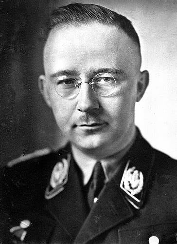

Né le 7 octobre 1900 et mort par suicide le 23 mai 1945.
Supérieur direct de Reinhard Heydrich planificateur de l'horreur, l'un des plus hauts dignitaires du Troisième Reich, plus haut dirigeant de la SS et Ministre de l’Intérieur, un des principaux maîtres d’œuvre de la Solution Finale.